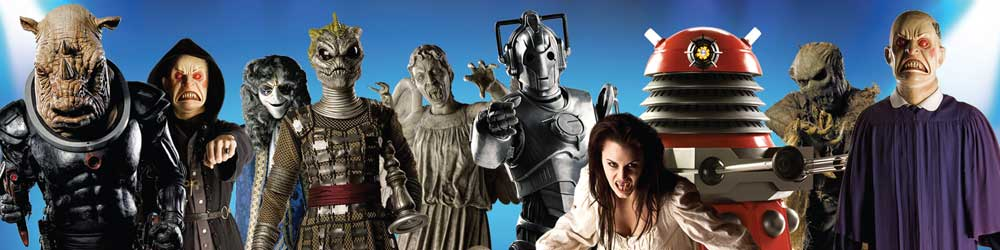
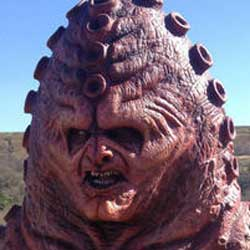

|  |
| Home The Doctors The Companions The Villians Show History |
ZygonThe Zygons are a fictional extraterrestrial race in the long-running British science fiction television programme Doctor Who. The Zygons have shape-shifting abilities, allowing them to replicate the appearance of another being, but they must keep the subject alive in order to use its body print. This skill was vital in their concealment and in their scheme to seize power despite their small numbers along with their organic space craft. The Zygons returned in 2013 in "The Day of the Doctor", the 50th anniversary episode of the program.[1] Tenth Doctor actor David Tennant has stated that they are his favourite monsters from Doctor Who.[2]
|
|
Madeleine Schwartz Ann Marie Skjold |
Content derived from Dr. Who Wikipedia.
|